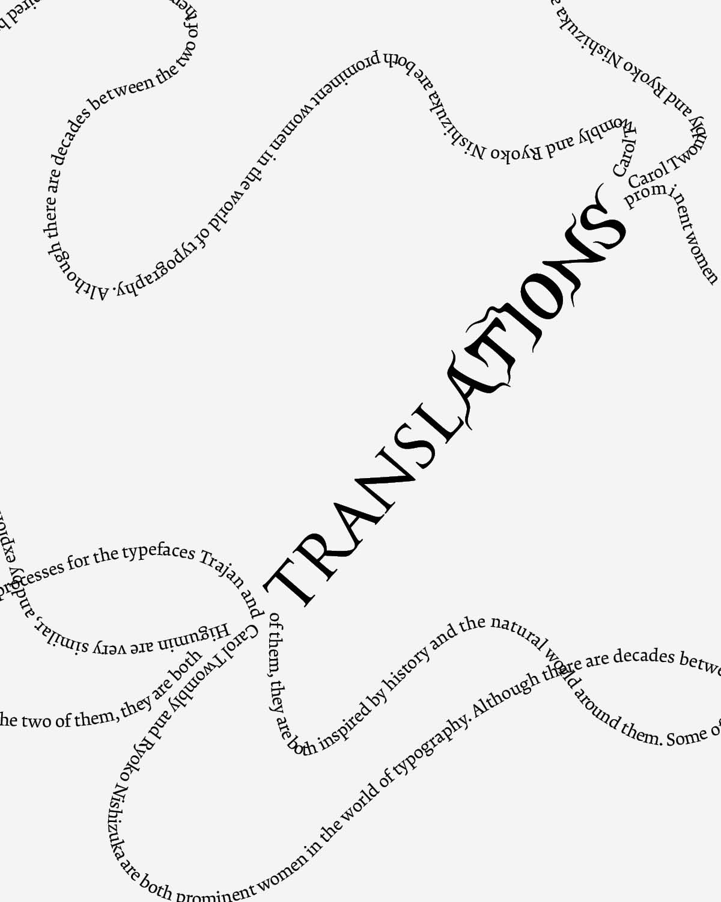
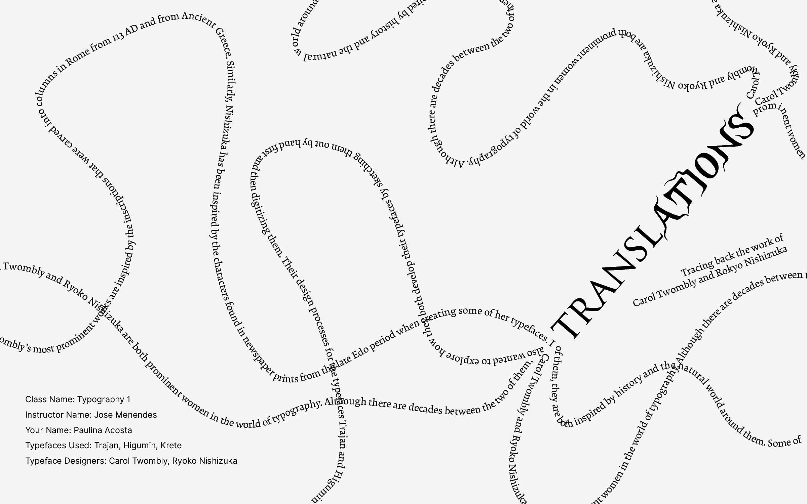
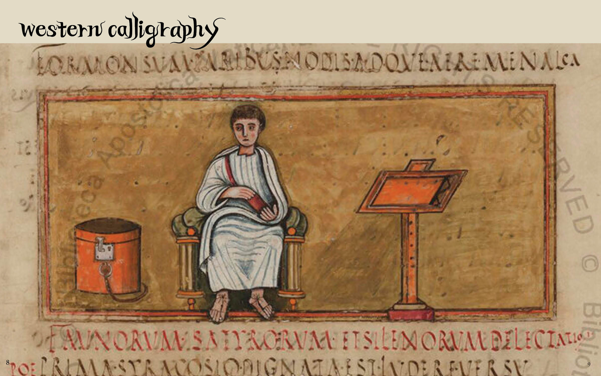
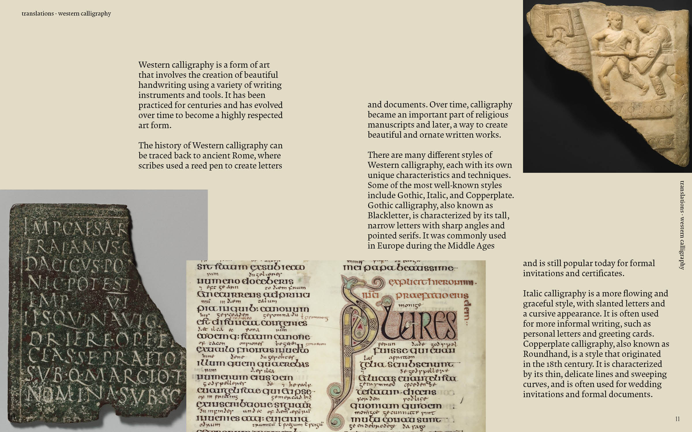
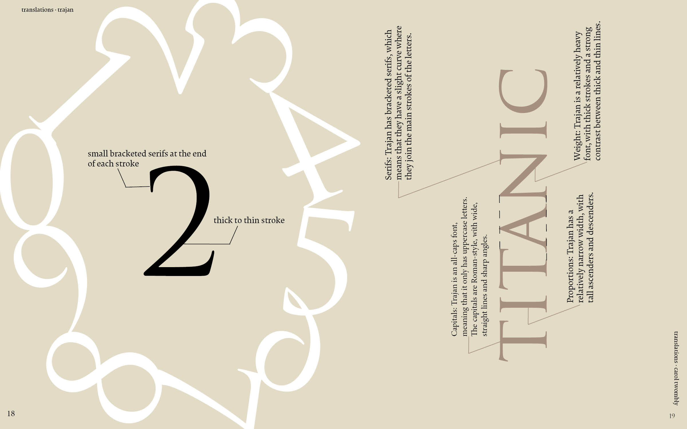
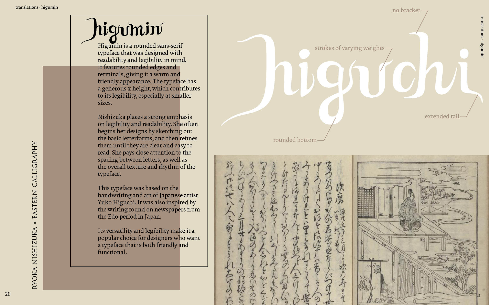
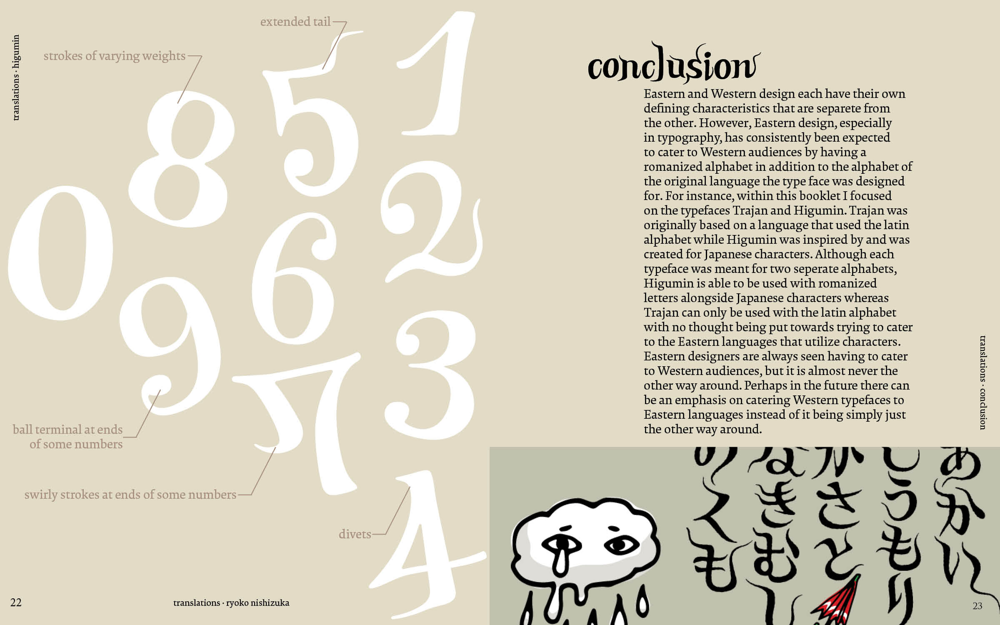

Typography · Print · 2023
Translations
A typography booklet tracing the parallel design processes of Carol Twombly and Ryoko Nishizuka, two women who translated the past into the present.
Typography · Print · 2023
A typography booklet tracing the parallel design processes of Carol Twombly and Ryoko Nishizuka, two women who translated the past into the present.
Role
Solo designer
Context
Typography 1 · 2023
Deliverables
Printed Booklet · MP4
Tools
Adobe InDesign · Illustrator
The project
Translations is a printed typography booklet exploring the parallel design processes of Carol Twombly (Trajan) and Ryoko Nishizuka (Higumin). Two prominent women in typography who, despite working decades apart and in completely different traditions, share the same method: tracing historical calligraphy by hand and digitizing it into a typeface.
Twombly drew from Roman inscriptions carved into Trajan's Column in 113 AD. Nishizuka drew from newspaper prints of the Edo period in Japan.
The booklet
The cover uses curving text set along custom paths, pulling the book's thesis in different directions at once just as translation does to language. The table of contents introduces the five chapters through vertical image strips, each one a visual teaser for what follows.


Inside the booklet
Each chapter uses the typeface it discusses as its primary design material. The Trajan chapter is set in Trajan and Krete. The Higumin chapter uses Higumin alongside Latin characters. Every spread treats letterforms as image, not just text.





Read the booklet
Browse the complete booklet below.